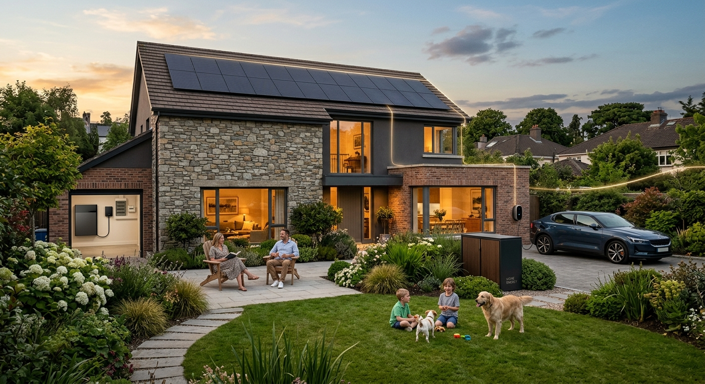
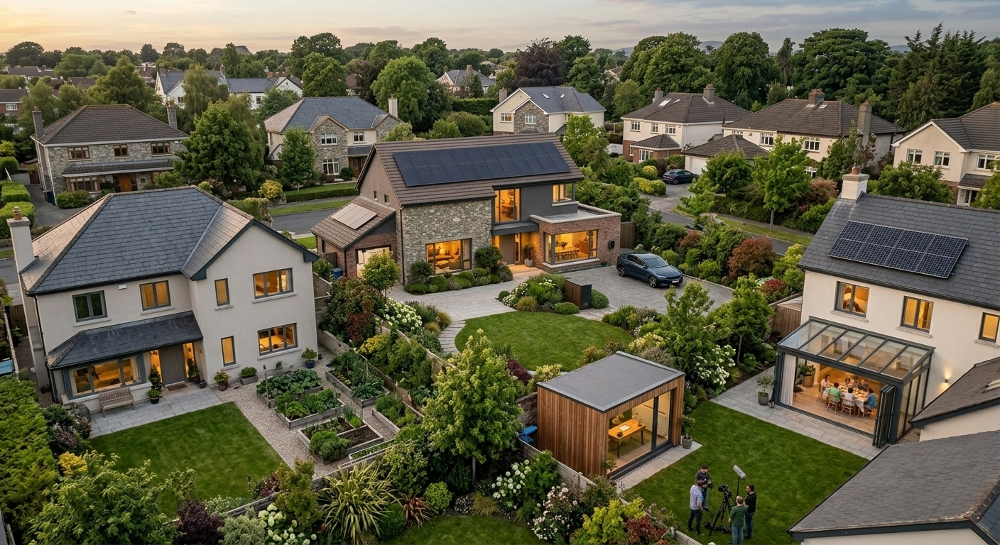

Computers produce heat. Homes need heat.
What if one could help supply
the other?
Today — the physics
Almost all the electricity a computer draws leaves it as heat. A data centre spends more money getting rid of that heat. Your house spends money making it. Those are the same thing, pointing in opposite directions.
In Ireland this stopped being a curiosity some time ago. Data centres took 5% of the country’s electricity in 2015. By 2024 it was 22%, and the Commission for Regulation of Utilities projects 31% by 2034.
Put the computer where the heat is wanted, and the waste stops being waste. That is the whole idea. Everything below is about how close it actually is.
A data centre pays twice: once for the electricity, and again to throw the heat away. Drawn by PlotNua — an illustration of the mechanism, not of an installation.
Not here yet. But not hypothetical either.
There are houses today with a computer bolted to the hot water cylinder.
Emerging — outside IrelandNot a prototype in a lab. Occupied homes, with a submeter on the wall and a box on the cylinder. The household gets the hot water.
The chain is short enough to follow in one line. A business sends computing work to a server. The server does the work and, like every computer, turns almost all of its electricity into heat. That heat goes into the water in the cylinder. The company whose work it is pays for the electricity the server used. The house supplies the cylinder, the space and the connection.
Which means the homeowner isn’t buying a miniature data centre. They are hosting part of one. heata is blunt about that: a host cannot run their own computing on the unit, because for the household it is, in their words, “really just an energy efficiency device reducing your energy bill”.
- Britain · in homes A compute unit clamped to a domestic hot water cylinder through a patented thermal bridge. A billing-accredited submeter is fitted, and the household is credited for the electricity the unit uses. heata (Bit Warmer Ltd). The thermal bridge fits a vented cylinder, and the unit works alongside the existing heating system rather than replacing it. To host one, a home needs a water cylinder and fast broadband; there is a waiting list. heata’s own figure is a saving of up to £340 a year, calculated on 4.25 kWh of hot water a day at British energy prices. The installation was tested with British Gas engineers.
- Britain · proposed A unit that replaces the gas boiler rather than working beside it, doing data processing for business customers and using that heat to warm the house and its water. Thermify HeatHub, in the company’s own description. Reported, not published by them: a household price of around £90 a month covering installation, the equipment lease and repairs, on a minimum ten-year term. Their open programme today is for ten organisations, not households.
- Britain · building scale An immersion-cooled “digital boiler” installed at a building with constant heat demand, displacing the gas that used to make that heat. Deep Green. At Exmouth Leisure Centre the reported result was 62% less gas for the pool and over £20,000 a year saved. Blocks of flats are named as a target building type.
- Germany · specified A household unit specified at 500 W, desktop sized, silent, sitting behind the meter. CYANIS AI, Hamburg. The architecture is published; the household layer is not an open programme. It is here for one reason — it sets the physical scale of the idea.
Every one of those figures is British or German, under those countries’ electricity prices and programmes. None of it is open to an Irish homeowner. And in every case that is actually operating, what the household receives is heat — not income.
What has changed recently is not the physics. It is that two different commercial shapes have started to appear, and they ask opposite things of the household.
- Host the compute The provider owns the equipment and puts it in the house. The provider pays for the electricity it uses, and its heat helps heat the household’s water. heata’s model. The household pays nothing and gets heat; what it supplies is a suitable cylinder, the space and the connection. The existing heating system stays where it is.
- Heating as a service The computing equipment is the heating system, and the household pays a monthly amount for heat rather than buying a boiler. Thermify’s proposed model. The reported price bundles installation, the equipment lease and repairs into a long contract. A proposition, not a service an Irish household can buy.
- What both have in common Neither asks the homeowner to buy a server, run it, or know anything about computing. In both models, the computing happens in the background. What matters to the household is much more familiar: whether the property can accommodate the equipment and make useful use of the heat.
The technology may be unfamiliar. The commercial idea isn’t. Hosting equipment that somebody else owns and runs, or paying monthly for heat instead of buying the machine that makes it, are both arrangements Irish households already recognise from other parts of the house. If a residential compute proposition ever arrives here, it is more likely to look like one of those than like buying and running a server.
Reported in September 2026, and worth holding lightly because it is reporting rather than a company statement: around a hundred UK homes have a heata unit, with roughly three thousand households on the waiting list and more installations planned. One of those households told a reporter their hot-water costs fell by about £10–£15 a month. That is one house, and it is not a figure anyone should expect.
Real installation photography will be added when publication rights are confirmed.Waste heat from a data centre already heats buildings in Tallaght.
Today — operating since 2023This is the part most people in Ireland have not heard. It is not a trial, it is not a pilot, and it has been running for three years.
Ireland’s first large-scale district heating network of its kind. During normal operation, its heat demand is 100% covered by waste heat from the neighbouring Amazon data centre.
Phase 1 has been operational since 2023, supplying South Dublin County Council’s County Hall and library complex and buildings on the TU Dublin Tallaght campus. Operated by Heat Works, Ireland’s first not-for-profit energy utility, wholly owned by South Dublin County Council.
- 1,400+ Tonnes of CO₂ saved in 2025, on the scheme’s own figures.
- 133 Affordable apartments were set to connect as the scheme expanded in 2025. Whether that connection is complete is something PlotNua has asked Codema and has not yet been told.
- It proves the heat is real. Compute heat already reaches Irish buildings, including homes.
- It arrives through a pipe. A heat network, built by a council-owned utility, fed by one utility-scale data centre. Nothing in it belongs to a household. There is no equipment on anybody’s property.
- It is not proof that a house can host computing. It is the opposite end of the same idea — district scale, delivered to buildings, not generated at them.
This is already being built in Ireland.
Emerging — commercial and community sitesTandem Compute is developing distributed AI infrastructure at larger commercial and community sites — places with a constant appetite for heat and the energy infrastructure already in the ground. We asked them about houses, and the answer was more useful than a brochure would have been.
- What they build Distributed AI compute infrastructure at locations where the energy it produces can be put to productive use. Tandem Compute. A host site is judged on heat demand, existing energy infrastructure, power, fibre and physical space.
- Where, today Larger commercial and community sites — pools, leisure facilities, hotels, food production, industrial users. Places with a constant, year-round appetite for heat and the infrastructure already in the ground.
- Increasingly examining Compute combined with CHP — where a site has suitable existing gas infrastructure. The CHP makes electricity for the compute and useful heat, and the compute’s own heat is recovered too. That condition is theirs, and it is load-bearing. Without the gas infrastructure, this route does not apply.
- The nearer-term housing route A housing or mixed-use development with centralised heating, hosting compute and CHP centrally and distributing the heat across the development. A development, not a house. The centralised-heating condition is theirs too.
Individual homes are not part of Tandem’s current pipeline. In the same breath they said they do think that is coming, pointing to very small distributed compute installations emerging in the United States.
Tandem is not a PlotNua partner. This is one email exchange and a conversation being arranged, recorded here because what an operator says about its own limits is worth more than what anybody says about its promise.
How a development-scale model could work. Illustration based on the model described by Tandem Compute. Centralised heating is a precondition of that model, not a detail.
Nobody yet knows what a “compute-ready” home looks like.
There is no agreed standard for this yet. So today, nobody can reliably tell you whether an individual home would qualify.
Distributed residential computing is not currently commercially available through PlotNua in Ireland. PlotNua is investigating what would be required if this model enters the Irish market.
Nobody has published the technical requirements a property would have to meet. Until they do, no one can tell you whether a property is technically compatible, and PlotNua will not pretend otherwise.
Everything from here down is different. It is available in Ireland today, it is supported, and it is worth doing entirely on its own terms — whatever happens to the idea above.
The energy anatomy of your property
Today — available in Ireland nowEverything a house would have to be before it could ever do any of the above is already available here. Not as a package and not as a product — as seven separate places on an ordinary property, each of which can do something with energy rather than only consume it.
Doing all seven would not make your property compute-ready. Nothing can, because nobody has defined compute-ready. Each of these is worth doing for its own reasons, and that is the only promise on this page.
Seven positions, drawn by PlotNua. Which of them apply depends entirely on the property — its age, its boundaries, its orientation, whether it has off-street parking, whether it is a protected structure.
The one position almost every house already has.
Panels turn daylight into electricity the house uses as it is made. No moving parts, no planning permission on a house, and the State pays part of the cost.
Grant, VAT and permission
VAT. 0% on the supply and installation of panels on a private dwelling.
Who qualifies. The home must have been built and occupied before 2021. The grant is not open where solar PV funding has already been claimed at that MPRN — whoever claimed it. Your installer applies to ESB Networks before anything goes on the roof, and that usually takes at least four weeks; afterwards the house needs a new BER assessment before the grant is paid.
Permission. No planning permission for rooftop panels on a house, and no limit on the roof area used. Restrictions still apply to protected structures and homes in an Architectural Conservation Area, and the exemption carries conditions such as a minimum distance from the roof edge.
Who stands behind the work. SEAI’s own words: it “does not approve, guarantee, or warranty a company or their works.” The State pays part of the cost. Choosing the installer is still entirely yours.
A battery doesn’t make electricity. It moves it through time.
It holds the afternoon until the evening. This is the piece that turns a house from something that reacts to the grid into something that can choose.
Grant, eligibility and the grid side
Who qualifies. The home needs an MPRN and must have been built and occupied before 2025 — a different year from the solar grant, which is why a house finished in 2022 can be outside one and inside the other. One per MPRN, installed by an SEAI registered Solar PV contractor, with the ESB Networks application made before installation. Solar and battery can go in a single application.
The grid side. ESB Networks treats an AC-connected battery as a microgenerator, listed on the NC6 application with its rated output, within the microgeneration thresholds and assessed on inverter capacity. The notification happens before installation, not after, and the work is certified by a Safe Electric registered electrician.
Two things we have not established. Whether a battery installed before that date can be claimed retrospectively, and how the €600 interacts with the solar grant ceiling. We will not guess at either.
There is usable heat in Irish air, even in February.
A unit about the size of a small chest freezer takes it out of the air and moves it inside. It is the largest single change most Irish houses can make to how they use energy — and the one that most changes what the roof and the battery are for.
Grant and the heat loss test
The test. SEAI uses a Heat Loss Indicator of 2.3 or below. If your house is above it, or nobody knows, a technical assessment establishes the position. The home must have been built and occupied before 2021.
The ground can do more than heat a house.
A few metres down, the ground sits at roughly the same temperature all year. A ground-source system draws that relatively stable heat from beneath the property — through pipework laid in shallow trenches across the garden, or down a borehole where there is no room to dig.
Some systems can also use that same ground connection for cooling. Whether that works for a particular Irish home depends on the system, the ground conditions and the design.
Grant, what decides it, and what we have not established
What decides it. Garden area for trenches, or access for a drilling rig. This is the one position where the shape of the site, rather than the house, is the constraint.
On cooling. PlotNua has not established, from a first-party Irish source, whether or on what terms a domestic ground loop in Ireland can be used for cooling. The capability is real in the technology; the Irish domestic position is not something we can stand over yet, and we will say so plainly when we can.
You can put up a wind turbine in Ireland without planning permission.
Inside tight limits, connected under the same rules as solar, and paid for what it exports. That is genuinely true — and it is only half the question.
The one number most likely to decide it for you is the boundary rule. The mast has to stand back from the nearest party boundary by the full height of the assembly plus a metre — a 14 m clear radius at the maximum exempt size, which rules out a great many suburban gardens before wind is discussed at all.
The planning limits, at a glance
Setback. The mast must stand back from the nearest party boundary by the total height of the assembly plus one metre.
Noise. 43 dB(A) or less, or no more than 5 dB(A) above background, at the nearest inhabited neighbouring dwelling.
Where the exemption disappears. It does not apply at all where the work would affect a protected landscape or view, protected archaeological, geological, historical, scientific or ecological features, or an area under a special amenity area order. Designations change under a house. SEAI advises a Section 5 Declaration from the local authority, about €80, and warns: “There have been instances of people assuming they were exempt which have ended with the local authority requesting that installations be removed.”
Connecting it. ESB Networks’ micro-generation definition “makes no explicit reference to any specific form of generating technology”, so a domestic turbine goes through the same NC6 route as solar. Micro-generation is 25 A or less on a single phase, about 6 kVA. Where generation is not inverter-connected — which small wind can be — capacity is assessed on the generator’s own continuous rating.
Being paid for it. The regulator’s definition of microgeneration names small wind turbines explicitly, so export is paid on the same terms as solar. CRU. There is no SEAI grant for a domestic wind turbine.
Two cautions. The SEAI Wind Atlas is the obvious place to look and it cannot answer this question: its lowest height is 50 m, and the tallest exempt domestic turbine is 13 m. And the SEAI document that sets out these exemptions is demonstrably out of date on solar, so the wind rule should be confirmed against current legislation before anyone relies on it.
The planning limits, drawn to scale.
A car is a battery that happens to have wheels.
Charging at home needs somewhere off-street to put it, and that is the whole of the test. Moving the charging to whichever hours your supplier prices lowest costs nothing and changes the bill.
What ESB Networks has published about two-way charging
What that document does not establish is availability. It is the architecture, not a date.
The position nobody thinks of as part of the house.
It is the piece that turns the other six from a private arrangement into something the system can see, use and pay for. Over two million smart meters are installed in Ireland, and more than four out of five households have one.
Meter, export, tax — and one trap
Export. Every electricity supplier must pay for eligible electricity you export — but not until the NC6 or NC7 has been processed by ESB Networks. Without that, the supplier will not pay. Rates are not regulated; each supplier sets its own.
Tax. The first €400 a year of microgeneration income is exempt from income tax.
The trap. If a smart meter has been offered and refused, the home is not eligible for export payment at all. Worth checking if anybody in the house ever said no at the door.
Grant, tax and permission in detail
Battery. A flat €600 for a system of 5 kWh or larger, open for applications from 6 October 2026. The home needs an MPRN and must have been built and occupied before 2025 — a different year from the solar grant, and the reason a 2022 house can be outside one and inside the other. One per MPRN, installed by an SEAI registered Solar PV contractor, with the ESB Networks application made before installation. Solar and battery can go in a single application. Whether a battery installed before that date can be claimed retrospectively, and how the €600 interacts with the solar ceiling, are two things PlotNua has not established and will not guess at.
Heat pump. Up to €14,500 as a bundle for a detached, semi-detached or mid-terrace house, lower for an apartment and lower again for air-to-air. Ground-source and water-to-water sit inside the same ceiling. A Heat Loss Indicator of 2.3 or below, or a technical assessment to establish the position. Built and occupied before 2021.
Tax. The first €400 a year from exporting is exempt from income tax. Above that it is taxed like other income.
Permission. Rooftop panels on a house are exempt with no area limit. A domestic wind turbine is exempt only inside the limits set out above. Both exemptions fall away for protected structures, Architectural Conservation Areas and the landscape, amenity and heritage designations in your local development plan. If any of that might apply to your home, ask your local authority — and for a turbine, ask for a Section 5 Declaration.
Who stands behind the work. SEAI “does not approve, guarantee, or warranty a company or their works.” The State pays part of the cost. It does not stand behind whoever does the job.

An illustration of the seven positions arriving on one property, not a photograph of a house that exists. Generated imagery, used here because the frame is explicitly about what a property could become.
The house is becoming a participant rather than a consumer.
Emerging and futureFour things are moving at once. None of them is something you can act on this week, and all four change what the seven positions above are for.
- The hot water cylinder Of everything in the house, the cylinder is the piece that connects the two halves of this page. It is the heat sink every household-scale compute model above depends on. Which is a strange thing to discover about the least interesting object in your utility room.
- Solar that does not start on the roof In Germany you can buy a small plug-in solar unit, hang it on a balcony railing and plug it in. More than a million households have registered one. Up to 2,000 W of panels and an inverter of up to 800 VA, under the Bundesnetzagentur’s published limits, with registration in the national register still required.
- Ireland — being worked on ESB Networks has convened a cross-industry group with the CRU and the NSAI to find a shared pathway, and has identified changes to its own standards and procedures. The group first met on 9 June 2026. ESB Networks estimated those changes would take up to twelve months, and a report to the Minister was expected in September 2026. Nothing has been published. Ireland does not yet have an established plug-in pathway for these smaller grid-connected systems.
- Houses working together Sustainable Energy Communities exist in Ireland, and development-scale heat networks are already real — Tallaght is one. What is immature here is the framework that would let ordinary neighbouring houses share what they generate. That is the bridge between the energy half of this page and the compute half.
Today, a grid-connected micro-generator in Ireland still goes through ESB Networks. The inverter has to meet IS EN 50549-1 with Irish settings, a type-test certificate goes with the form, and the notification is made for you by your registered installer. Until an Irish plug-in route is published, that is the rule — whatever is on sale elsewhere.
Set the four of them beside the rest of this page and a shape appears. A plug-in panel on a balcony. The same panel with a small battery behind it. A full roof and a house battery. A development with its own heat network. They are not different products so much as different sizes of the same idea: a part of a property doing something with energy rather than only consuming it.

An illustration, not a survey. The street where the development-scale version of this would make sense is an ordinary one — which is the point, and also the part nobody has built yet.
We can’t assess your house for this. We can tell you what would be asked.
Today — the check existsThere is a separate check that walks through your property and tells you what is already there, what is missing, and what nobody can answer yet.
It will not give you a score. We can’t give a property a meaningful percentage yet, because nobody has established what a fully “compute-ready” home would actually require. And “I don’t know” is a real answer to every question in it — it costs you nothing to say so.
What we can say is roughly what the questions would be about. Not whether you want a data centre. Things much more ordinary: how your water is heated and what kind of cylinder you have, your broadband, your electrical supply, where equipment could sit, and how much hot water the household actually uses. The British examples above turn on exactly those details.
Those ordinary facts about a house may eventually decide whether it can host something much less ordinary. They are not a checklist, and they are not every provider’s criteria — two companies already want different things. But they are the kind of thing worth knowing about your own home either way.
- 01Generation The roof. Available today, grant-supported, worth doing alone.
- 02Storage The utility wall. Available today. The grant arrives 6 October 2026.
- 03Management The meter and the tariff. Available today, and the cheapest step of all.
- 04An active energy property Generating, storing, timing and exporting. Thousands of Irish homes are already here.
- 05Distributed compute Operating in homes abroad. PlotNua has not found an equivalent Irish residential offering, and Tandem has confirmed that individual homes are not part of its current pipeline.
- 06Useful compute heat Real at district scale in Tallaght since 2023. Real at household scale abroad. PlotNua has found no Irish house connected to it.
- 07A house doing some of the work of a data centre A possibility, not a product. Nobody has published what a property would have to be, which is why this page ends with a question instead of an offer.
What your home could do today
A few short questions about this property, and we’ll set out which of the four energy moves could apply here — and what’s worth checking next. No quote at the end.
See what your home could do →The separate question
Could a house like this ever host computing? Nobody can answer that yet. This check tells you what would be asked, and what PlotNua has not established.
Residential Compute Readiness →